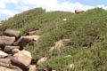
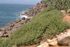
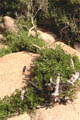
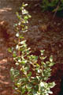
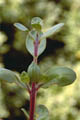
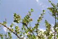
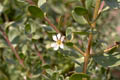
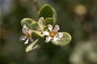
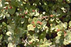
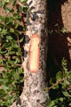

Diagnostic characters
Botany & morphology
Regeneration
Reproductive biology
Ecology
Distribution
Small tree, 7 to 10 m. Leaves opposite. Flowers white to pink, fleshy; fruit capsule with persistent calyx.
Leaves simple, opposite, decussate, shortly petiolate, ovate to obovate, apex pointed or rounded, base cuneate, margin entire, fleshy, both surfaces densely covered by stiff white hairs.
Inflorescence axillary, solitary, sessile cymes.
Flowers dimorphic, pink colored, hexamerous, regular, bisexual; pedicel 5 to 10 mm long; calyx 6–lobed, greenish red, campanulate, persistent in fruit; petals 6, shortly clawed, ephemeral; stamens 12, in 2 series; ovary superior, globular, heterosylous, style simple and long, slender, stigma capitate.
Fruit capsule, spherical, with persistent style; seeds numerous, flattened, angular, with a corky margin or wing.
Bark light gray to brown.
Tree architecture shows Attim’s model.
Epigeal germination.
Pollination by insects.
It occurs in more exposed mangrove associations, on rocky foreshores, in seacoast and tidal regions.
East Africa, through southeastern Asia to northern Australia, Polynesia, east Malaysia. In Sri Lanka it occurs in southwestern part and also in Jaffna, Trincomalie. In India, sea coast and tidal backwaters of Malabar coast.
Top of the page